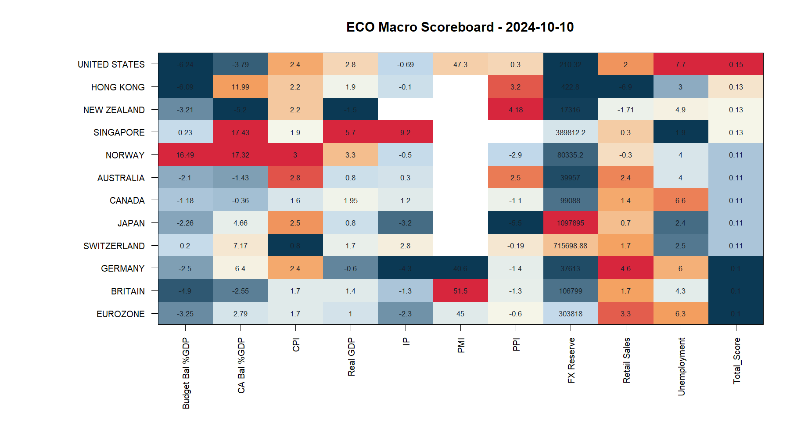
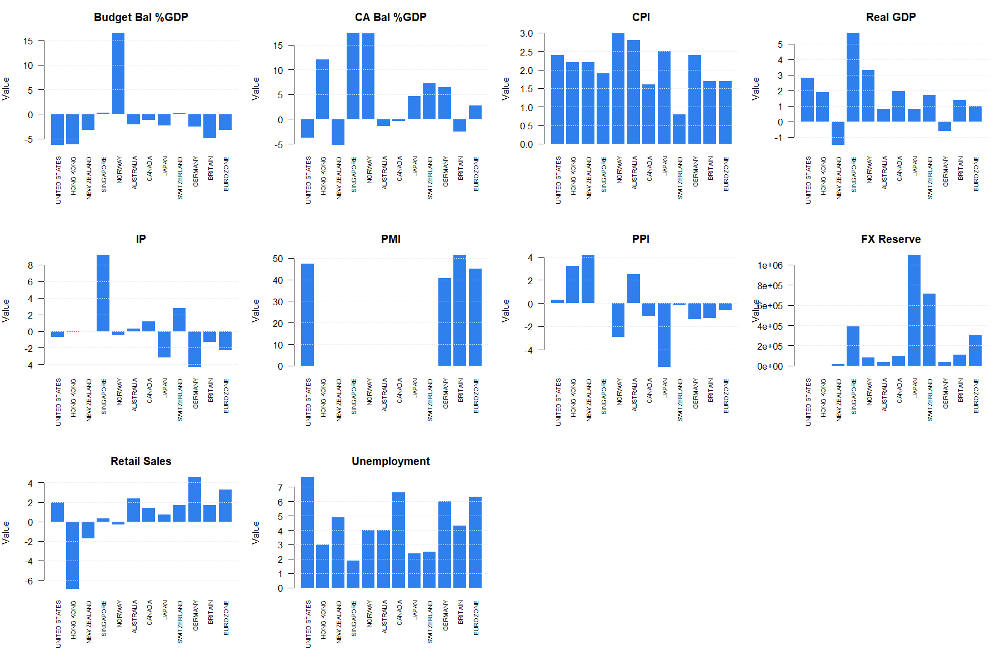
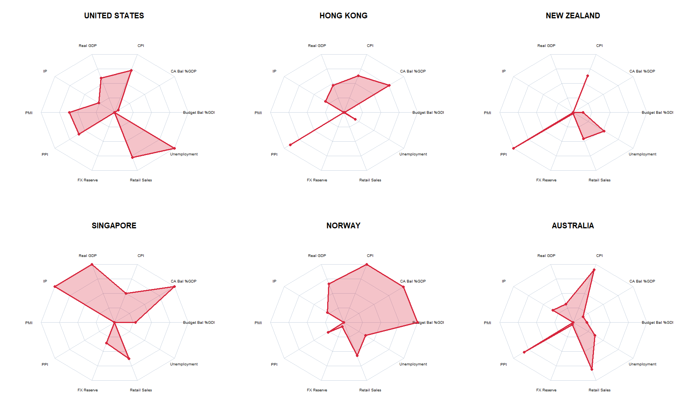

| Country | Budget Bal %GDP | CA Bal %GDP | CPI | Real GDP | IP | PMI | PPI | FX Reserve | Retail Sales | Unemployment | Total_Score |
|---|---|---|---|---|---|---|---|---|---|---|---|
| UNITED STATES | -6.24 | -3.79 | 2.4 | 2.800 | -0.69 | 47.3 | 0.30 | 210.32 | 2.000 | 7.7 | 0.1498430 |
| HONG KONG | -6.09 | 11.99 | 2.2 | 1.900 | -0.10 | NA | 3.20 | 422.80 | -6.900 | 3.0 | 0.1277636 |
| NEW ZEALAND | -3.21 | -5.20 | 2.2 | -1.500 | NA | NA | 4.18 | 17316.00 | -1.707 | 4.9 | 0.1252603 |
| SINGAPORE | 0.23 | 17.43 | 1.9 | 5.700 | 9.20 | NA | NA | 389812.20 | 0.300 | 1.9 | 0.1250112 |
| NORWAY | 16.49 | 17.32 | 3.0 | 3.300 | -0.50 | NA | -2.90 | 80335.20 | -0.300 | 4.0 | 0.1111991 |
| AUSTRALIA | -2.10 | -1.43 | 2.8 | 0.800 | 0.30 | NA | 2.50 | 39957.00 | 2.400 | 4.0 | 0.1111836 |
| CANADA | -1.18 | -0.36 | 1.6 | 1.948 | 1.20 | NA | -1.10 | 99088.00 | 1.400 | 6.6 | 0.1111330 |
| JAPAN | -2.26 | 4.66 | 2.5 | 0.800 | -3.20 | NA | -5.50 | 1097895.00 | 0.700 | 2.4 | 0.1111156 |
| SWITZERLAND | 0.20 | 7.17 | 0.8 | 1.700 | 2.80 | NA | -0.19 | 715698.88 | 1.700 | 2.5 | 0.1111139 |
| GERMANY | -2.50 | 6.40 | 2.4 | -0.600 | -4.30 | 40.6 | -1.40 | 37613.00 | 4.600 | 6.0 | 0.1002390 |
| BRITAIN | -4.90 | -2.55 | 1.7 | 1.400 | -1.30 | 51.5 | -1.30 | 106799.00 | 1.700 | 4.3 | 0.1000886 |
| EUROZONE | -3.25 | 2.79 | 1.7 | 1.000 | -2.30 | 45.0 | -0.60 | 303818.00 | 3.300 | 6.3 | 0.1000274 |